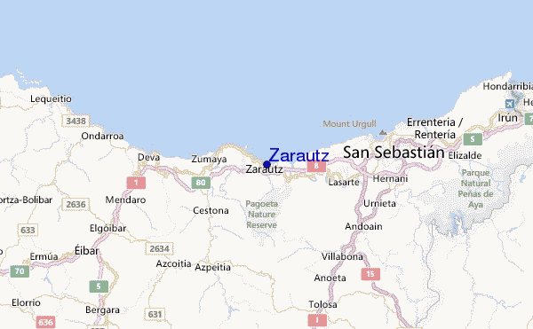
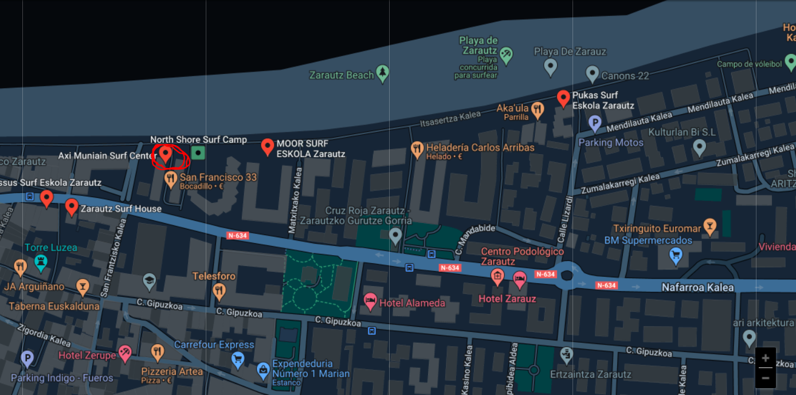

AURKEZPENA
Zer da North Shore Surf Camp?
- North Shore Surf Camp 14-18 urte bitarteko haurrentzako udaleku bat da.
- Kanpamentu hau udan bakarrik dago eskuragarri. Egun erabilgarriak:
- Uztailaren 1etik 5ra
- Uztailaren 23tik 28era
- Abuztuaren 1etik 5ra
- Abuztuaren 23tik 28era
- Kanpalekuaren prezioa:
- Uztaila --> 550,73 euro
- Abuztua-> 475,98 euro
- Kapamentura eraman beharrekoa:
- Arropa arrunta
- Bainugelako arropa (bainujantziak)
- Lo-zakua
- Garbitzeko produktuak
Makrolokalizazioa eta mikrolokalizazioa
- MAKROLOKALIZAZIOA-->Zarautz Espainiako herri eta udalerria da, Urola Kostako eskualdearen ekialdean kokatua, Gipuzkoako probintzian, Euskal Autonomia Erkidegoan.

- MIKROLOKALIZAZIOA--> Itsasertza kalea

Egingo diren jarduerak
Yinkana
Ibilbideak mendian eta herrian zehar
Surfa
Kayak
"Tu si que vales"
Guztion artean ondo pasatzeko eta lagun berriak egiteko helburua duten jarduerak